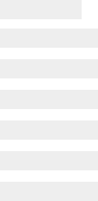

Loading States
Loading states ease user frustration when dense page content or data must be loaded from a server.
Loading states indicate to the user that content is loading, often with an animated graphic such as a spinner or "ghost content" (also called "skeleton screens") that roughly simulate what the content will look like when loaded.
Ghost content, when used while a screen is loading in the background, can often be perceived by the user to be shorter in duration than a blank screen or simple spinners. Animating the content with a moving or "shimmering" effect can also help decrease perceived duration.
Types of loading states
Spinners
Spinners are page- or block-level loading animations that display while content is loading behind it. Page-level spinners often have a page-size translucent block behind them partially obscuring the page behind it to indicate that the page is temporarily inoperable.
Examples:
Animated .gif
This example may not loop properly depending on your browser.

Bootstrap default
HealthEquity uses the default Bootstrap spinner. More information can be found at the spinner component page.
Ghost content
Ghost content animations are simply .gif image files with transparent backgrounds used to approximate the look of the content being loaded. They can be made using any animation tool that allows gradients, masking and alpha channels. The UX team uses Adobe Animate. Contact Kevin Jackson at kjackson@healthequity.com to have an animation made to a specific size with specific ghost content.
Examples:
138 x 282

638 x 297
725 x 335

752 x 27